Desarrollo de la aplicación móvil y su integración con los servicios del backend, de la especificación al APK
Sistema
CampusConectado
Equipo
Equipo 1 · App e integración
Asignatura
Servicios en la Nube
Institución
Tecnológico Nacional de México · Instituto Tecnológico de Reynosa
Elaboró
Ravyn Studio
Uso
Documento interno del equipo, base para la presentación del desarrollo
Versión de la app
1.2.0
Fecha
26 de noviembre de 2026
Todos los datos que aparecen en este documento son ficticios. No contiene contraseñas, claves privadas ni datos personales reales de alumnos.
Índice
1. Introducción
1.1 Propósito del documento
Este documento cuenta, parte por parte, cómo el Equipo 1 construyó la aplicación móvil CampusConectado y la conectó con los tres servicios del backend: desde la especificación inicial hasta la versión 1.2.0 instalada en el celular. Está pensado para preparar la presentación del equipo: cada capítulo corresponde a un bloque de la exposición y trae lo que conviene mostrar en pantalla.
No sustituye al Manual de usuario (cómo se usa la app) ni al Manual técnico de servicios e integración (contrato completo de las APIs). Aquí el foco es el proceso: qué se decidió, en qué orden se hizo, qué problemas aparecieron y cómo se resolvieron.
1.2 Qué le tocó al Equipo 1
Responsabilidad
En qué consistió
Aplicación móvil
Diseñar y programar la app Android para alumnos: avisos, talleres, inscripción y consulta de inscripciones.
Integración
Consumir los servicios de Avisos (Equipo 2), Talleres (Equipo 3) e Inscripciones (Equipo 4) y traducir cada respuesta en un mensaje claro para el alumno.
Calidad
Probar la app contra la matriz de pruebas de la práctica, primero con datos de prueba y después contra el servidor real.
Entrega
Generar el APK instalable con versiones numeradas y documentar el trabajo.
1.3 El resultado en números
3versiones publicadas (1.0.0, 1.1.0 y 1.2.0)
8pantallas: login, 4 pestañas, detalle, Mi cuenta y Estado
44archivos de código TypeScript (unas 3,300 líneas)
20/20verificaciones automáticas aprobadas
1.4 Cómo usar este documento en la presentación
Los capítulos 2 a 9 siguen el orden real del desarrollo. Cada uno puede ser una o dos diapositivas.
Los recuadros En la presentación indican qué mostrar en vivo o en captura.
El capítulo 12 trae un guion sugerido con tiempos.
Las rutas de archivos, comandos y fragmentos de código aparecen en letra monoespaciada.
En la presentación. Abrir con la app instalada en el celular y la pantalla de inicio de sesión. Decir en una frase qué hace la app y que el resto de la exposición explica cómo se llegó ahí.
2. Punto de partida
2.1 El encargo
La práctica pedía una app para que los alumnos del campus consultaran avisos y talleres, se inscribieran a un taller y revisaran sus inscripciones. El sistema completo lo formaban cuatro equipos: tres construían un servicio web cada uno y el Equipo 1 construía la app que los usa.
Figura 1. Arquitectura del sistema: la app consume los tres servicios por HTTP en la IP pública del servidor.
2.2 El contrato acordado entre equipos
Antes de programar se acordó el contrato de cada servicio. La app se construyó contra ese contrato, sin esperar a que los servicios existieran.
Servicio
Puerto
Rutas
Respuestas relevantes
Avisos
30001
GET /salud, GET /avisos
200 con la lista de avisos
Talleres
30002
GET /salud, GET /talleres, GET /talleres/{id}
200 o 404 si el taller no existe
Inscripciones
30003
GET /salud, POST /inscripciones, GET /inscripciones?matricula=
201, 400, 404, 409 y 503
2.3 Restricciones que marcaron el diseño
HTTP sin cifrar. Android bloquea el tráfico http:// en las apps de producción; había que permitirlo de forma explícita.
Sin autenticación ni CORS. Los servicios no tienen login; la app tampoco puede probarse contra el servidor desde un navegador.
Servicios que llegan en momentos distintos. Al empezar, Talleres todavía no estaba desplegado. La app tenía que avanzar sin él.
Fecha de entrega del sistema: 12 de noviembre de 2026. La meta interna fue tener la app funcional con datos de prueba en uno o dos días.
2.4 Elección de tecnología
La práctica sugería MIT App Inventor. El equipo eligió Expo con React Native y TypeScript porque la rúbrica pedía distinguir varios tipos de error y la app necesitaba navegación con parámetros, caché y builds repetibles.
Tema
App Inventor
Expo + React Native (elegido)
Errores
Difícil distinguir un timeout de una página HTML de error.
Un tipo ApiError con el código, el detalle del servidor y el código 0 para red o timeout.
Navegación
Una Screen por pantalla y estado global incómodo.
Expo Router: pestañas, rutas protegidas y parámetros (/taller/[id]).
Datos
Caché manual.
React Query: caché, reintentos y recarga al deslizar.
Código
Bloques visuales, difíciles de versionar.
TypeScript estricto, Git, revisión con tsc y ESLint.
APK
Exportación manual.
Compilación automática en GitHub Actions con número de versión.
Lo que se asumió a cambio: una curva de aprendizaje mayor y un APK más pesado (unos 56 MB).
3. Línea de tiempo
El trabajo se organizó en fases. Todo el historial está en Git, así que cada fase se puede rastrear hasta sus commits.
Fecha
Fase
Resultado
6 nov
1. Base del proyecto
Proyecto Expo SDK 58, tema de marca y contrato interno para trabajar en paralelo.
6 nov
2. Capa de datos
Cliente HTTP, manejo de errores, datos de prueba y hooks de datos.
6 nov
3. Componentes y pantallas
14 componentes propios y las 6 pantallas de la primera versión.
6 nov
4. Pruebas y CI
Matriz de 13 pruebas aprobada con datos de prueba; revisión automática en cada cambio.
6 nov
5. Releases automáticos
APK compilado en GitHub Actions. Versión 1.0.0.
12 nov
6. Sesión y servidor real
Inicio de sesión, fin de los datos de prueba e integración con los tres servicios. Versión 1.1.0.
16 nov
7. Padrón de alumnos
Inicio de sesión con padrón y contraseña calculada de la CURP. Versión 1.2.0.
20 nov
8. Evidencias y manuales
Capturas reales desde el celular, manual de usuario y manual técnico integrados.
En la presentación. Esta tabla funciona como diapositiva de agenda: cada fila es un bloque de la exposición.
4. Fase 1 · Base del proyecto
4.1 Creación del proyecto
Se partió de la plantilla oficial de Expo (SDK 58) con Expo Router y TypeScript. Se quitaron los ejemplos de la plantilla y se instalaron solo las dependencias necesarias, siempre con npx expo install para que Expo eligiera versiones compatibles.
@expo-google-fonts: Funnel Display, Funnel Sans y Caveat
4.2 Tema de marca
Antes de cualquier pantalla se definió el tema en src/theme/: colores, tipografía, espacios, radios y sombras. Ninguna pantalla escribe un color o una fuente a mano; todas toman los valores del tema.
Color
Valor
Uso en la app
Rosa
#E5097F
Acción principal: un solo botón rosa por pantalla.
Rosa profundo
#A8055E
Texto pequeño de acento y enlaces.
Sol
#FFC93C
Chips con el número de taller.
Tinta
#141414
Texto y estructura.
Marfil
#FFF6E6
Fondo de la app.
Hoja
#1E8A4C
Éxito y servicio en línea.
Nota. En Android, con fuentes personalizadas, el peso de letra no elige la variante. Cada peso se registró como una familia distinta (por ejemplo FunnelDisplay_800ExtraBold) y se usa por su nombre.
4.3 Contrato interno para trabajar en paralelo
Para avanzar varias partes al mismo tiempo se escribió CONTRATO.md: los nombres y firmas exactos de cada módulo (configuración, capa de datos, hooks, componentes y pantallas). Con ese acuerdo, la capa de datos, los componentes y las pantallas se programaron en paralelo y encajaron al unirlos, con un solo ajuste de integración.
El desarrollo se apoyó en Claude Code como asistente de programación, con varios agentes trabajando al mismo tiempo sobre partes distintas del contrato. El equipo definió la especificación, revisó cada entrega y tomó las decisiones de diseño e integración.
4.4 Estructura de carpetas
Estructura del repositorio
app-tec/
├── app.json, app.config.ts Configuración de Expo (paquete Android, plugins, versión)
├── plugins/ Firma del APK con llave propia (opcional)
├── .github/workflows/ ci.yml (revisiones) · release.yml (APK)
└── src/
├── app/ Pantallas (cada archivo es una ruta)
│ ├── _layout.tsx Fuentes, sesión y rutas protegidas
│ ├── login.tsx · perfil.tsx · estado.tsx · taller/[id].tsx
│ └── (tabs)/ Avisos, Talleres, Inscribirme, Mis inscripciones
├── api/ Cliente HTTP, errores y llamadas al servidor
├── hooks/ Hooks de datos (React Query)
├── auth/ Sesión, padrón y cálculo de la CURP
├── components/ Componentes propios
├── theme/ Colores, tipografía y espacios
├── types/api.ts Tipos del contrato
└── config.ts Direcciones de los servicios
5. Fase 2 · Capa de datos
5.1 Arquitectura en capas
La regla principal del proyecto: ninguna pantalla llama al servidor directamente. Cada petición recorre las mismas capas, y así el manejo de errores, los tiempos de espera y los reintentos están en un solo lugar.
Arma las tres direcciones a partir de las variables EXPO_PUBLIC_*.
Cliente HTTP
src/api/http.ts
Tiempo de espera, lectura de JSON y conversión de cualquier falla en ApiError.
Errores
src/api/errors.ts
Traduce cada código a un mensaje para el alumno.
Servicios
src/api/real.ts
Una función por ruta del contrato.
Hooks
src/hooks/index.ts
Caché, estados de carga y reintentos para cada operación.
5.2 El cliente HTTP
fetchJson es la única función que habla con la red. Corta la petición a los 8 segundos, tolera respuestas que no son JSON (por ejemplo, las páginas de error en HTML de Flask) y convierte cualquier falla en un ApiError con un código. El código 0 significa que no hubo respuesta: sin red o tiempo agotado.
src/api/http.ts (extracto)
const controller = new AbortController();
const timer = setTimeout(() => controller.abort(), config.timeoutMs); // 8 s
try {
res = await fetch(url, { method, headers, body, signal: controller.signal });
} catch (e) {
// Sin red o tiempo agotado: código 0
throw new ApiError(0, { context, message: 'Sin conexión' });
}
if (!res.ok) {
// Se toma "error" (o "mensaje") del cuerpo como detalle para la demo
throw new ApiError(res.status, { serverMessage, context });
}
5.3 De un código HTTP a un mensaje claro
Cada respuesta del servidor se traduce en un mensaje con título, texto y siguiente paso. Debajo se muestra en letra pequeña el detalle que envió el servidor, útil para explicar el error en la demo.
Código
Título en la app
Texto
201
¡Listo, ya estás inscrito!
Te esperamos en {taller}, {horario}.
400
Faltan datos
Revisa tu número de control, tu nombre y el taller, y vuelve a intentarlo.
404
Ese taller no existe
Revisa el número del taller o elige uno de la lista.
409
Ya estás inscrito
Ya tienes lugar en este taller. Lo ves en Mis inscripciones.
503
Talleres no responde
Algo no salió de nuestro lado. Intenta de nuevo en un momento.
0 (sin red)
Sin conexión con el campus
No pudimos llegar al servidor. Revisa tu internet e intenta de nuevo.
Otro 5xx
Algo no salió
Ya lo estamos revisando; intenta de nuevo en un momento.
5.4 Datos de prueba mientras llegaba el servidor
Como Talleres aún no existía, la capa de datos se escribió detrás de una interfaz (CampusApi) con dos implementaciones: la real y una de datos de prueba que se comportaba como el servidor: latencia de 300 a 800 ms, las mismas reglas de 400, 404 y 409, y folios incrementales. Desde la pantalla Estado del servidor se podían simular un 503, la falta de red y una latencia alta para demostrar el manejo de errores sin depender de nadie.
Una variable de entorno elegía qué servicios iban con datos de prueba. Así, en cuanto Avisos e Inscripciones estuvieron arriba, la app los usó de verdad mientras Talleres seguía simulado.
Por qué importa. Cambiar al servidor real no tocó ninguna pantalla: solo la capa de servicios y una variable. Es la lección técnica más importante del proyecto.
5.5 Hooks de datos, caché y reintentos
Hook
Qué hace
useAvisos
Lista de avisos con recarga al deslizar.
useTalleres
Catálogo de talleres; se reutiliza 30 s sin volver a pedirlo.
useTaller(id)
Detalle de un taller; no reintenta un 404.
useInscribir
Valida, envía la inscripción y actualiza Mis inscripciones al instante.
useInscripciones
Inscripciones del alumno, cruzadas con el catálogo para mostrar nombre y horario.
useSalud
Consulta los tres /salud en paralelo y mide el tiempo de respuesta.
Lecturas: un reintento con 1 s de espera si falla la red o el servidor; nunca en errores 4xx.
Inscribirse: sin reintentos, para no duplicar una inscripción.
6. Fase 3 · Componentes y pantallas
6.1 Componentes propios
No se usó ningún kit de interfaz. Primero se hicieron los componentes base y después todas las pantallas se armaron con ellos, lo que mantuvo el estilo uniforme.
Componente
Para qué sirve
Screen, Header
Fondo marfil, márgenes seguros, recarga al deslizar y encabezado de cada pantalla.
Text
Variantes tipográficas del tema (título, cuerpo, etiqueta, anotación).
Button, IconButton
Botón principal rosa, secundario y discreto, con estados de carga y deshabilitado.
Card, Chip
Tarjetas blancas o destacadas y el número de taller.
TextField, TallerPicker
Campos de captura y hoja inferior para elegir un taller.
StateView, Banner
Estados de carga, vacío y error con botón Reintentar; avisos dentro de formularios.
StatusDot, Footer
Indicador en línea / sin respuesta y el pie “Hecho por Ravyn Studio”.
6.2 Las pantallas de la primera versión
La versión 1.0.0 tenía cuatro pestañas (Avisos, Talleres, Inscribirme e Inscripciones), el detalle de taller y la pantalla oculta de Estado del servidor. Cada pantalla resuelve sus cuatro estados: cargando, vacía, con error y con datos.
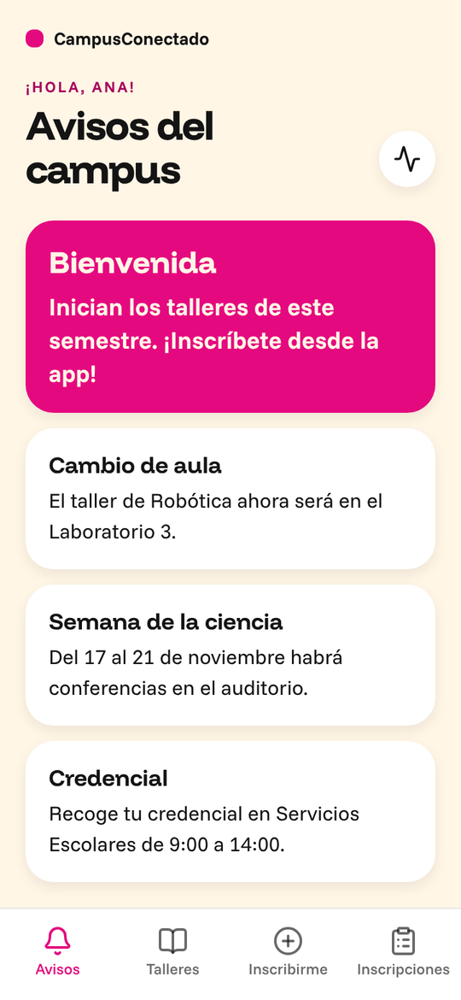
Avisos
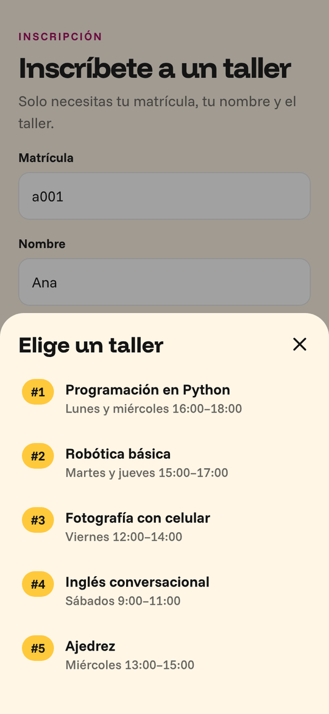
Elegir taller
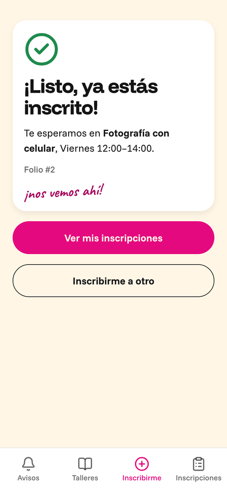
Inscripción exitosa
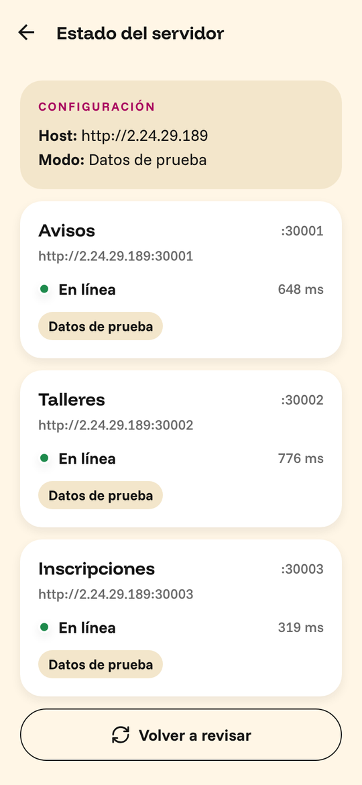
Estado (datos de prueba)
Capturas de la versión 1.0.0 con datos de prueba, tomadas durante las pruebas a 360 px de ancho.
6.3 Flujo de navegación
El recorrido principal es Talleres → Detalle → Inscribirme: desde el detalle, el botón “Inscribirme aquí” abre el formulario con el taller ya elegido.
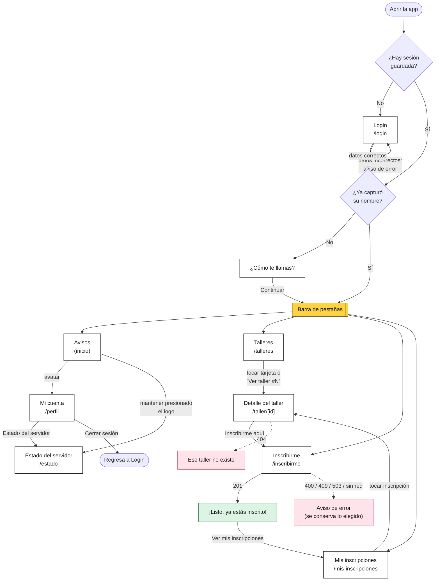
Figura 2. Flujo de pantallas de la aplicación.
En la presentación. Mostrar las capturas de la versión 1.0.0 junto a las de la 1.2.0 (capítulo 9) para que se vea cómo evolucionó la app.
7. Fase 4 · Pruebas y revisión automática
7.1 Matriz de pruebas con datos de prueba
Con la app completa, se corrió la matriz de 13 pruebas de la práctica en modo de datos de prueba, en pantalla de 360 px de ancho. Las 13 pasaron.
#
Prueba
Resultado en la app
1
Abrir Avisos
4 avisos; el primero destacado.
2
Abrir Talleres
5 talleres con número, nombre y horario.
3 y 4
Buscar taller 1 y taller 99
Abre el detalle del 1; “Ese taller no existe” para el 99.
5 y 6
Inscribir y repetir la inscripción
“¡Listo, ya estás inscrito!” y después “Ya estás inscrito”.
7 y 8
Enviar vacío y taller inexistente
“Faltan datos” y “Ese taller no existe”.
9
Talleres caído (simulado)
“Talleres no responde”.
10
Mis inscripciones
Nombre y horario de cada taller, con folio.
11
Sin red (simulado)
“Sin conexión con el campus” con Reintentar.
12
Estado del servidor
Los 3 servicios con su tiempo de respuesta.
13
Cerrar y reabrir
Datos del alumno precargados.
7.2 Lo que encontraron las pruebas
Hallazgo
Corrección
La pestaña “Mis inscripciones” se cortaba a 360 px.
La etiqueta pasó a “Inscripciones”; el título de la pantalla sigue completo.
Las etiquetas de la barra inferior se recortaban por abajo.
Barra más alta, ajustada al margen seguro del teléfono.
Un 404 al inscribirse mostraba un mensaje genérico.
El 404 de Inscripciones se reconoce como “Ese taller no existe”.
7.3 Revisión automática en cada cambio (CI)
Cada vez que se sube código, GitHub Actions corre ci.yml. Si algo falla, el cambio se marca en rojo antes de llegar al APK.
Revisión
Qué detecta
npx tsc --noEmit
Errores de tipos en TypeScript.
npx expo lint
Problemas de estilo y errores comunes (desde la 1.1.0).
npx expo-doctor
Dependencias incompatibles con el SDK y problemas de configuración.
npx expo export -p android
Que el código de Android se empaquete sin errores.
Prueba del servidor
Desde la 1.2.0, revisión informativa de que los servicios responden desde Internet.
8. Fase 5 · APK y releases automáticos
8.1 Cómo se compila el APK
El APK se compila en GitHub Actions con release.yml, sin cuenta de Expo ni créditos de compilación en la nube:
npx expo prebuild -p android genera el proyecto nativo de Android a partir de app.json.
./gradlew assembleRelease compila el APK de producción.
El APK se renombra con la versión y se publica como Release del repositorio.
Se dispara de dos formas: subiendo una etiqueta v* o desde Actions → Release → Run workflow, escribiendo la versión y marcando publicar. La compilación tarda unos 17 minutos.
8.2 HTTP en el APK
Desde Android 9, una app de producción bloquea http://. En Expo Go todo funcionaba porque Expo Go ya lo permite, pero el APK habría fallado con “Sin conexión con el campus”. Se habilitó en app.json:
Importante. Este ajuste solo se puede comprobar en el APK instalado, no en Expo Go. Por eso la prueba de aceptación se hace siempre con el APK.
8.3 Problemas al publicar la primera versión
Problema
Solución
El entorno de desarrollo no permitía subir etiquetas al repositorio.
Se agregó la opción publicar al flujo: GitHub Actions crea la etiqueta y el release por su cuenta.
La acción que instala el SDK de Android fallaba a los 15 segundos.
Se usó el SDK que ya trae el servidor de GitHub y se actualizaron las acciones a Node 24.
Con eso salió la versión 1.0.0 el 6 de noviembre con dos APKs: uno con datos de prueba para la demo y otro conectado a Avisos e Inscripciones reales.
8.4 Firma del APK
El plugin plugins/withReleaseSigning.js firma el APK con una llave propia si existen los secretos ANDROID_KEYSTORE_* en el repositorio. Sin ellos, se firma con la llave de depuración: sirve para instalarlo en la demo, pero no para Google Play.
9. Fases 6 y 7 · Servidor real e inicio de sesión
9.1 Del modo de prueba al servidor real (v1.1.0)
El 12 de noviembre los tres servicios ya estaban desplegados. El equipo decidió quitar por completo los datos de prueba: la app siempre consume el servidor real y se publica un solo APK. Como las pantallas solo conocían la interfaz CampusApi, el cambio no tocó la interfaz de usuario.
Con la guía de integración del servidor se encontraron comportamientos que la app tenía que compensar:
Comportamiento del servidor
Qué hace la app
Solo revisa que existan los campos; acepta textos vacíos.
Valida antes de enviar y no manda nada incompleto.
La matrícula distingue mayúsculas (a001 ≠ A001).
Normaliza siempre a mayúsculas y sin espacios.
Un Pod recién reiniciado rechaza conexiones 1 a 3 s.
Espera 1 s antes de reintentar una lectura.
Inscripciones tarda hasta 3 s en responder 503 si Talleres falla.
Timeout de 8 s y texto “Registrando…” mientras espera.
Mis inscripciones solo trae el número de taller.
Lo cruza con el catálogo para mostrar nombre y horario.
Las rutas inexistentes responden con HTML.
El cliente HTTP lo detecta y muestra un mensaje genérico.
9.2 Sesión de alumno y rutas protegidas
La app pasó a pedir inicio de sesión con el número de control, que es lo que el servidor recibe como matrícula. La sesión se guarda en el teléfono, y Expo Router protege las rutas: sin sesión solo existen el login y el Estado del servidor.
También se agregaron Mi cuenta, la búsqueda de talleres por nombre, la insignia “Inscrito” y la opción de no volver a elegir un taller en el que el alumno ya está inscrito.
9.3 Padrón de alumnos y contraseña de la CURP (v1.2.0)
El servidor no tiene un servicio de login, así que el inicio de sesión se valida en la app contra un padrón de alumnos ficticio (src/auth/padron.ts). La contraseña son las 4 primeras letras de la CURP, que la app calcula a partir del nombre según el instructivo de RENAPO: primer apellido, su primera vocal interna, segundo apellido y nombre, con las reglas de María y José, partículas como “de la”, la Ñ y las palabras altisonantes.
Como el nombre llega del padrón, la app ya no tiene que preguntarlo. El cálculo se probó con 13 casos de CURP y 5 de inicio de sesión.
Limitación. Las 4 letras se deducen del nombre, así que no son un secreto. Sirve para la demo, no para un sistema real. Con un servicio escolar real, la validación debe hacerse en el servidor con una contraseña que no se pueda deducir; en la app solo cambiaría la función verificarCredenciales.
9.4 Secuencia de una inscripción
Este diagrama resume la integración: la app envía la inscripción, Inscripciones consulta a Talleres por la red interna del clúster y la respuesta vuelve convertida en mensaje.
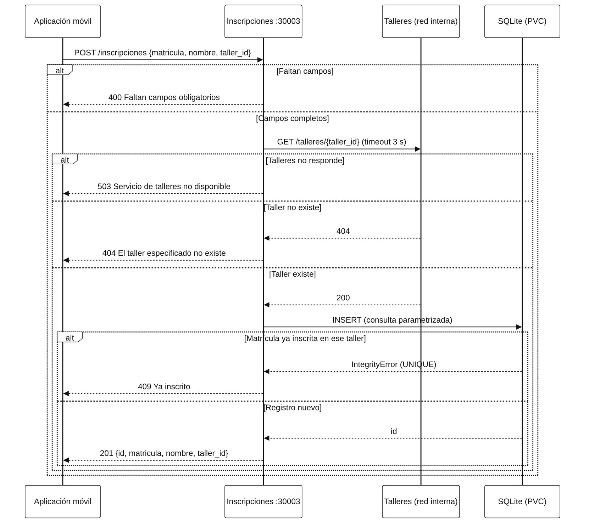
Figura 3. Secuencia de una inscripción entre la app y los servicios.
9.5 La app en su versión final
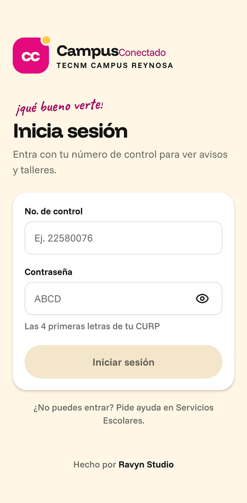
Inicio de sesión
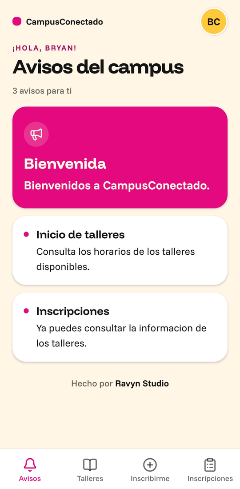
Avisos
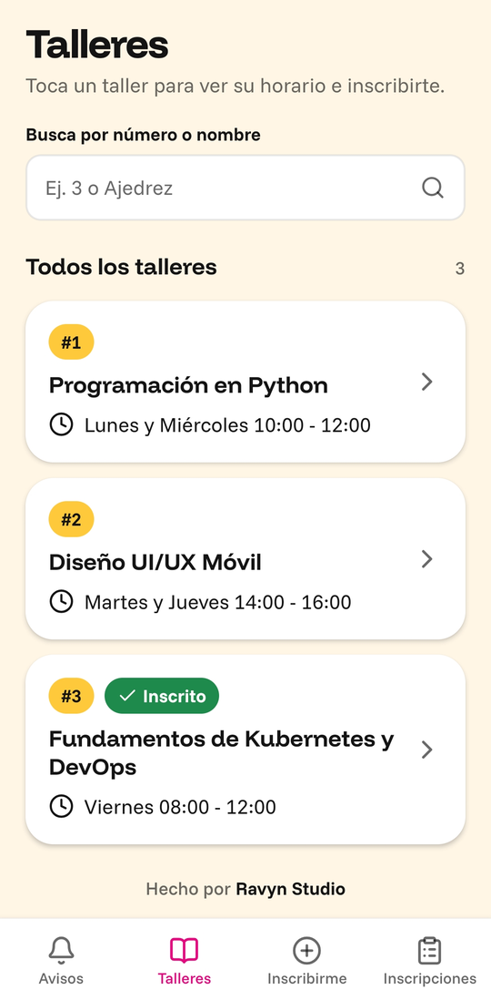
Talleres
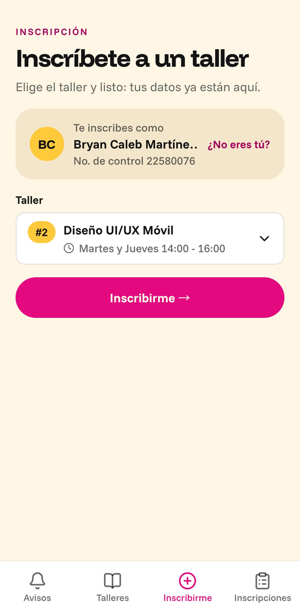
Inscribirme
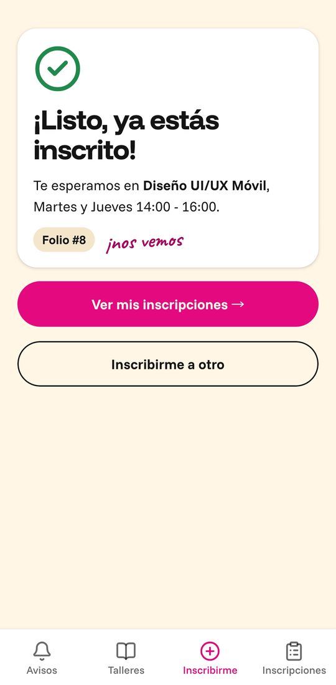
Inscripción registrada
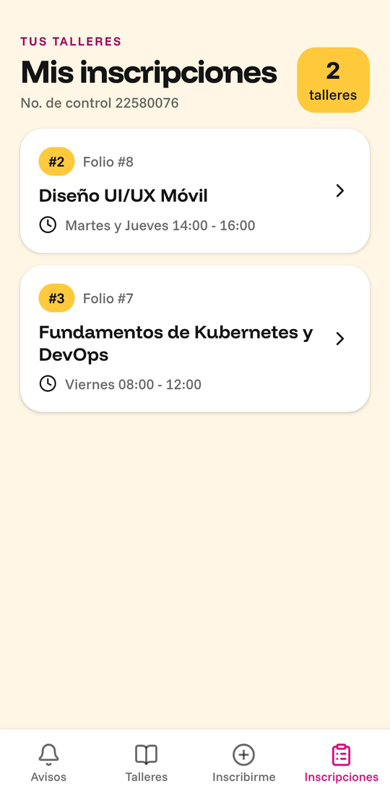
Mis inscripciones
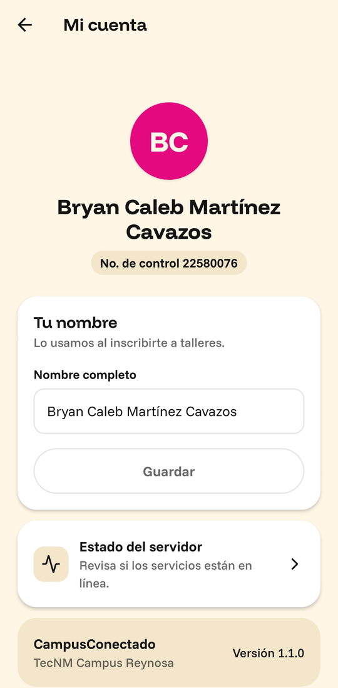
Mi cuenta
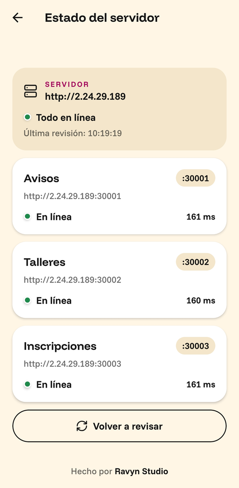
Estado del servidor
Capturas tomadas desde el celular con el APK, contra el servidor real.
En la presentación. Este es el mejor momento para la demo en vivo: iniciar sesión, buscar un taller, inscribirse y abrir Mis inscripciones. Cerrar con Estado del servidor mostrando los tres servicios en línea.
10. Problemas y soluciones
Resumen de los obstáculos del proyecto y cómo se resolvió cada uno. Funciona bien como diapositiva de cierre técnico.
Problema
Causa
Solución
Talleres no estaba desplegado al empezar.
Cada equipo avanzó a su ritmo.
Capa de datos detrás de una interfaz y datos de prueba que imitan al servidor.
El APK no podía llamar a http://.
Android 9+ bloquea HTTP sin cifrar.
usesCleartextTraffic con expo-build-properties.
La app no se puede probar contra el servidor desde el navegador.
Los servicios no envían CORS.
Pruebas en Expo Go y en el APK.
El servidor aceptaba inscripciones vacías.
Solo valida que existan los campos.
Validación en la app antes de enviar.
Errores intermitentes al reiniciar un servicio.
Los Pods tardan 1 a 3 s en aceptar conexiones.
Un reintento con 1 s de espera en las lecturas.
Páginas de error en HTML.
Flask responde HTML en rutas inexistentes.
El cliente HTTP tolera respuestas que no son JSON.
No hay servicio de login.
Fuera del alcance del backend.
Padrón local y contraseña calculada de la CURP, aislados en una función reemplazable.
Falló la compilación del primer release.
Falla de la acción que instala el SDK de Android.
Uso del SDK preinstalado en el servidor de GitHub.
11. Verificación final
11.1 Verificaciones automáticas
Las pruebas de la capa de datos usan el código real de src/api contra una réplica local del servidor con el mismo contrato. Complementan las pruebas en el celular, pero no las sustituyen.
Verificación
Resultado
Tipos (tsc), lint y expo-doctor
Sin errores; expo-doctor 20 de 20.
Empaquetado de Android
Bundle generado (6.9 MB).
Capa de datos contra la réplica del servidor
16 de 16 casos: 200, 201, 400, 404, 409, 503, HTML, timeout y sin red.
Cálculo de la CURP e inicio de sesión
13 casos de CURP y 5 de inicio de sesión aprobados.
11.2 Pruebas en el celular contra el servidor real
Con el APK instalado se confirmaron con captura los casos principales:
Prueba
Resultado
Abrir la app sin sesión y con contraseña incorrecta
✅ “Inicia sesión” y el aviso de datos incorrectos.
Avisos y Talleres
✅ Los 3 avisos y los 3 talleres reales con su horario.
Inscribirse al taller 2
✅ “¡Listo, ya estás inscrito!” con nombre, horario y folio.
Repetir la inscripción
✅ “Ya estás inscrito” en el detalle del taller.
Mis inscripciones
✅ Los talleres del alumno con nombre, horario y folio.
Sin red (modo avión)
✅ “Sin conexión con el campus” con Reintentar.
Estado del servidor
✅ Los 3 servicios en línea, con unos 160 ms cada uno.
Quedan por documentar con captura en el celular: búsqueda del taller 999, inscripciones vacías, persistencia y recuperación al reiniciar un Pod, y cierre de sesión. El detalle está en docs/entrega/Evidencias_pruebas_App.md.
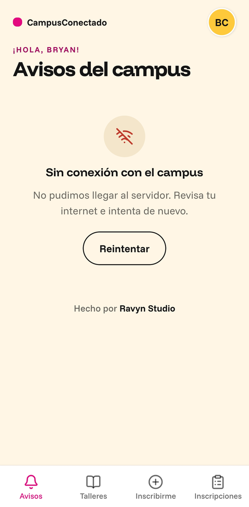
Sin conexión con el campus
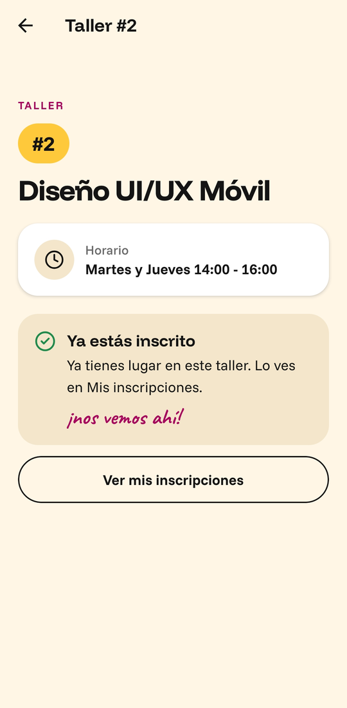
Ya estás inscrito
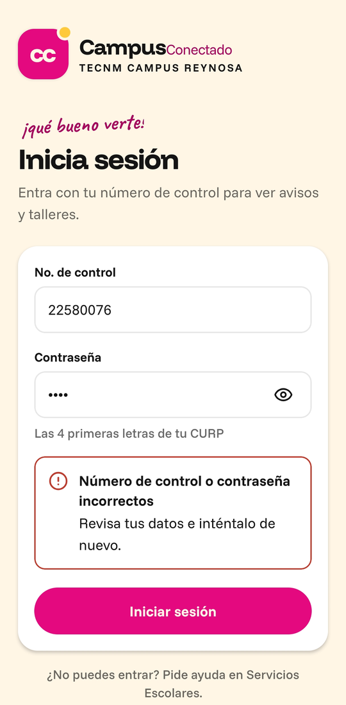
Datos incorrectos
12. Guion sugerido para la presentación
Propuesta para una exposición de unos 15 minutos. Los tiempos son orientativos; la demo en vivo es el bloque que más conviene cuidar.
#
Bloque
Tiempo
Qué mostrar
Capítulo
1
Presentación y objetivo
1 min
La app en el celular, pantalla de inicio de sesión.
1
2
Punto de partida
2 min
Figura 1 y la tabla del contrato.
2
3
Tecnología y base
1.5 min
Comparativa con App Inventor y el tema de marca.
2.4 y 4
4
Capa de datos
2.5 min
Recorrido de una petición y tabla de mensajes por código.
5
5
Pantallas y pruebas
2 min
Capturas de la 1.0.0 y la matriz de 13 pruebas.
6 y 7
6
APK automático
1.5 min
La página de Releases en GitHub con los APKs.
8
7
Servidor real y login
1.5 min
Comportamientos compensados y rutas protegidas.
9
8
Demo en vivo
2 min
Login → Talleres → Inscribirme → Mis inscripciones → Estado.
9.5
9
Problemas y cierre
1 min
Tabla de problemas y lecciones aprendidas.
10 y 13
Plan B para la demo. Si el servidor o la red del salón fallan, la propia app lo muestra con “Sin conexión con el campus” y el Estado del servidor. Conviene tener a la mano las capturas del capítulo 9.5 y explicar que ese mensaje también es parte del manejo de errores.
13. Lecciones aprendidas
Separar la capa de datos detrás de una interfaz permitió avanzar sin el servidor y cambiar al real sin tocar pantallas.
Acordar el contrato antes de programar, entre equipos y dentro del equipo, hizo posible trabajar en paralelo.
Probar en el APK, no solo en Expo Go: el permiso de HTTP solo falla en la app de producción.
No confiar en que el servidor valide: la app debe revisar los datos antes de enviarlos.
Automatizar desde el principio: la revisión en cada cambio y el APK automático evitaron sorpresas en la entrega.
Tomar capturas en cada fase: la bitácora de desarrollo se tuvo que reconstruir desde Git.
13.1 Siguientes pasos
Sustituir el padrón local por un servicio escolar real con contraseña en el servidor.
Migrar el servidor a HTTPS y retirar el permiso de tráfico sin cifrar.
Firmar el APK con una llave propia y publicar en Google Play (formato AAB).
Completar las capturas pendientes de la matriz en el celular.